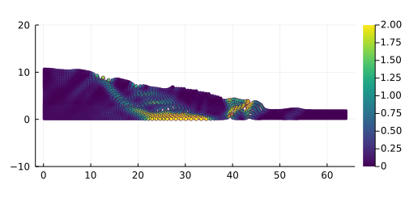
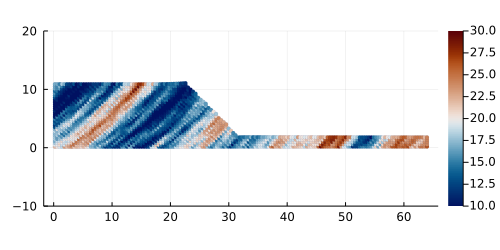

Documentation
Overview
This project originates from ep2-3De v1.0 and is fully witten in Julia. It solves explicit elasto-plastic problems within a finite deformation framework (i.e., adopting logarithmic strains and Kirchoff stresses, which allows the use of conventional small-strain stress integration algorithms within a finite deformation framework), using the material point method (MPM) with b-spline shape functions alongside with a mUSL approach.

The solver relies on random gaussian fields to generate initial fields $\psi(\boldsymbol{x})$, e.g., the cohesion $c(\boldsymbol{x}_p)$ or the internal friction angle $\phi(\boldsymbol{x}_p)$, with $\boldsymbol{x}_p$ the material point's coordinates.

Content
<div id='id-section2'/>